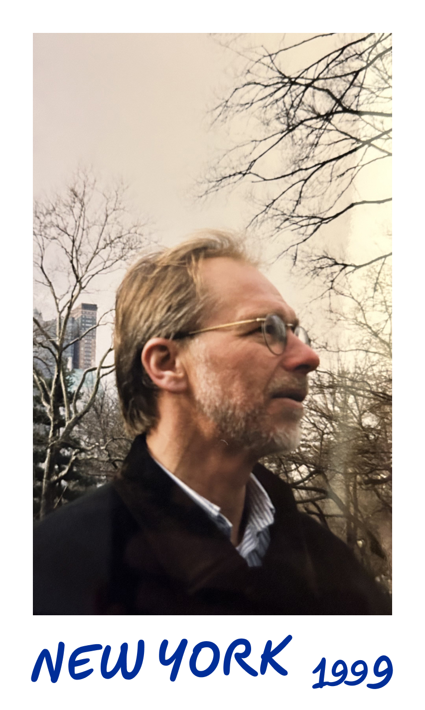
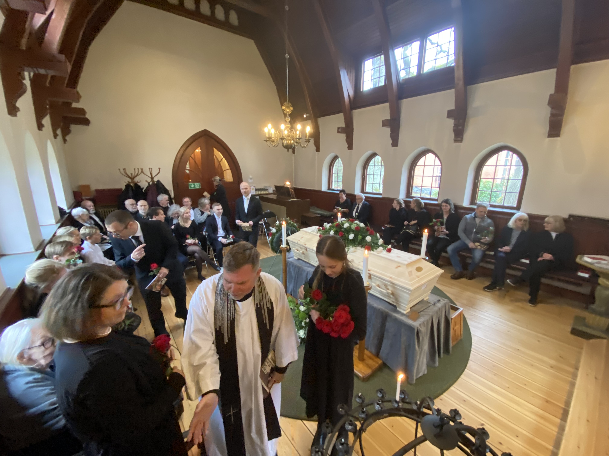
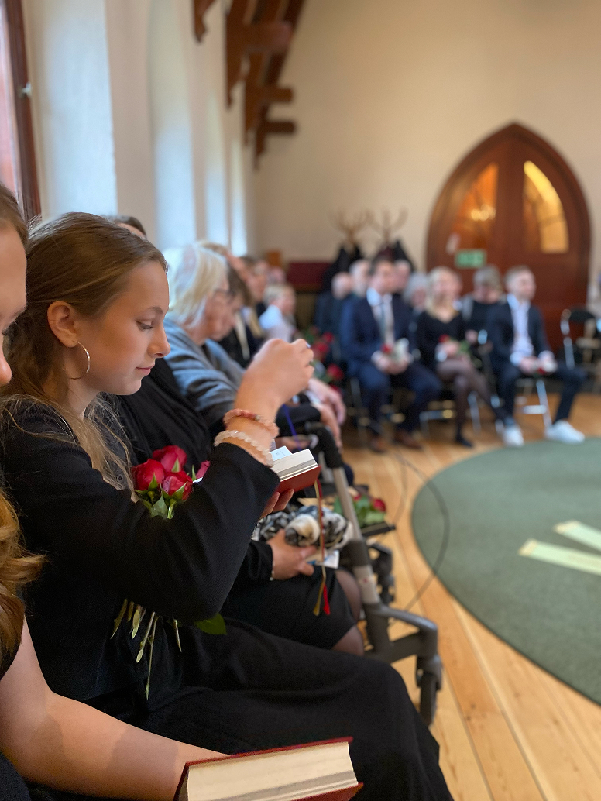
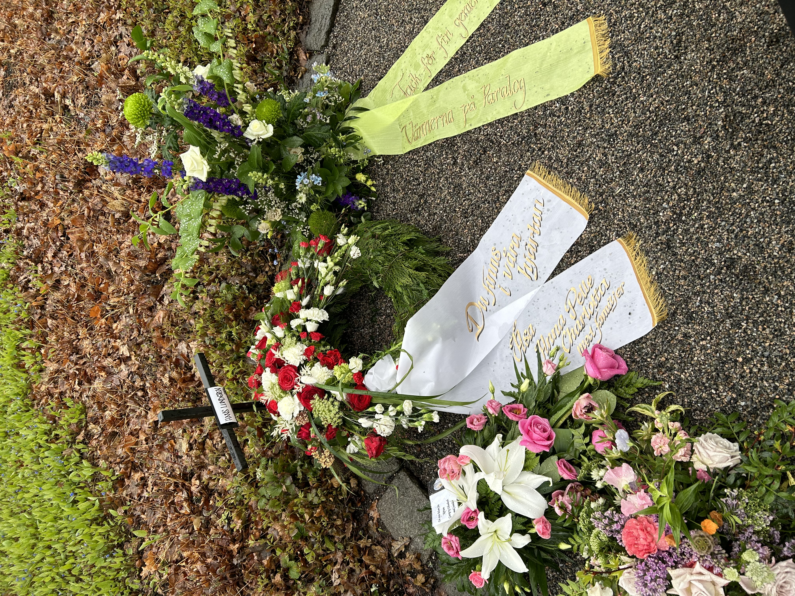
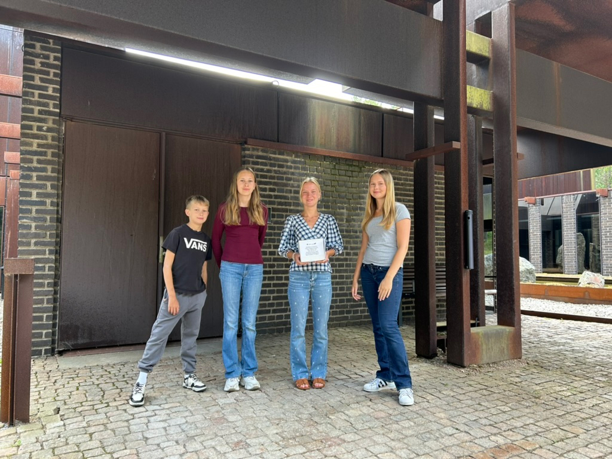
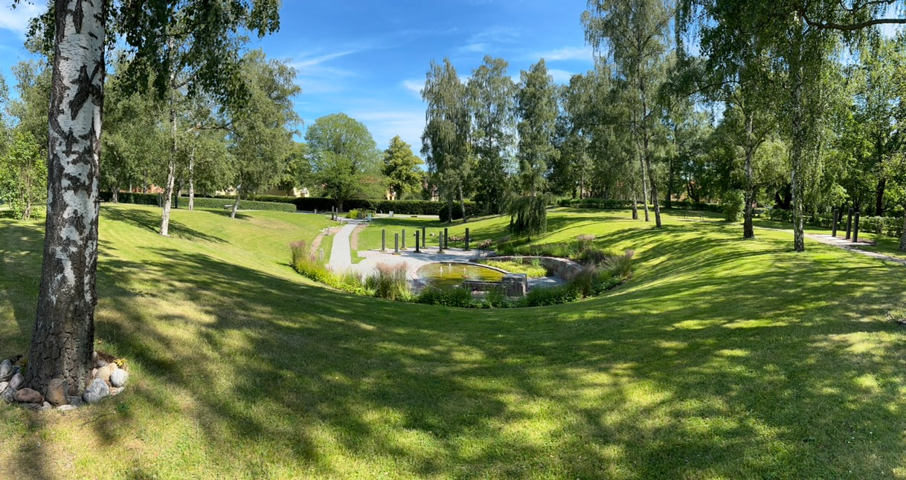
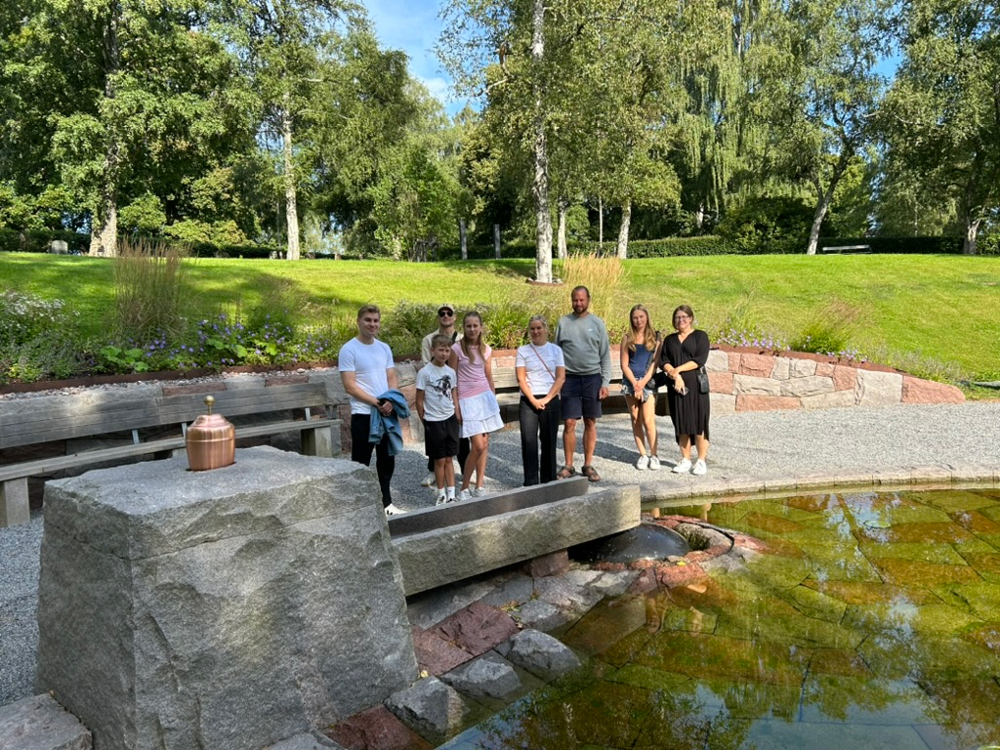
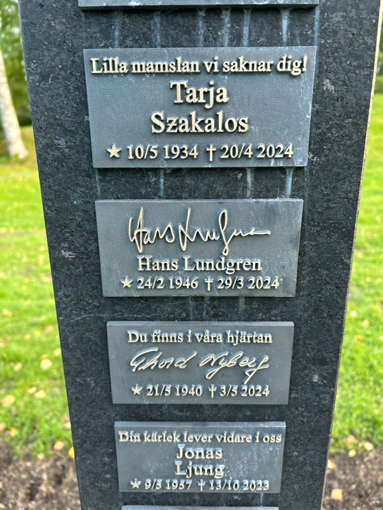

☆ 24 februari 1946 - ✞ 29 mars 2024
Pappa somnade in i sömnen i hemmet natten mellan 29 och 30 mars 2024.
Vi är innerligt tacksamma för allas deltagande och alla fina ord.
Vill också rikta ett stort tack till alla inom vård och hemtjänst som
tagit hand om pappa. Vi vet att det inte alltid varit så lätt. Också stort
tack till all butikspersonal i Sickla där pappa hängde alltsom oftast
sista åren. Här är en liten redogörelse vad som hände efter han gick bort.


Begravningsgudstjänst ägde rum i Nacka kapell, torsdagen den 25 april 2024. Stort tack till alla som närvarade. Avslutningsmusik: Time to say goodbye av Andrea Bocelli. En klassiker enligt Hasse som han gärna nynnade på till och från repetioner med Mörtnäskören när det begav sig. Präst: Göran Capron Lundqvist. Ombesörjdes av Hallsénius begravningsbyrå. Organist: Helené Hammarström.

Du finns i våra hjärtan - Åsa, Anna, Pelle, Charlotta med familjer. En sista hilsen -fra Kirsten, Georg og Elisabeth med familier. Varma kramar - Hanna och Malin. Tack för fin gemenskap - Vännerna från Paralog. Gåva till Rädda Barnen - I ljus minne bevarad, Sonja Brannemark. Radiohjälpen - Lindra nöden i Ukraina - Tack för alla glada tankeutbyten och körträffar, Arne. Hjärt-Lungfonden - En sista hälsning, vi saknar dig, Terttu & Bengt.

Hasse kremerades i Storkällans krematorium, Nacka, någon gång i början på sommaren. Måndagen 5 augusti 2024 hämtade vi askan för leverans till Nya Krematoriet på Skogskyrkogården och vidare gravsättning i askgravlunden på Sandsborgskyrkogården. Askan väger förvånansvärt mycket, närmare 3 kilo. Från vänster till höger barnbarnen Sander Brannemark, Maja Brannemark, Ebba Lundgren och Ellen Brannemark.

Slutgiltiga vilan blev Sandsborgskyrkogården askgravlund, mitt emot Skogskyrkogården. En gömd pärla. Klart värt ett besök.

Gravsättningen skedde onsdagen den 14 augusti 2024. Askan sprids med hjälp av vatten. Innehållet i urnan förs via en ränna över den stora svarta stenen ned i ett underjordiskt rör för att spridas i jorden under lunden. Om man zoomar in noga kan man se vita prickar av aska på stenen. Det är Hasse. Från vänster till höger: Vilhelm Österlund, Sander Brannemark, Pelle Lundgren, Maja Brannemark, Helena Lundgren, David Brannemark, Ellen Brannemark, Anna Brannemark.

Inskription kom upp under hösten 2024. Sitter på tredje pelaren direkt till vänster efter ingången. Namnteckningen är en proffsjobb från Hasses glansdagar.